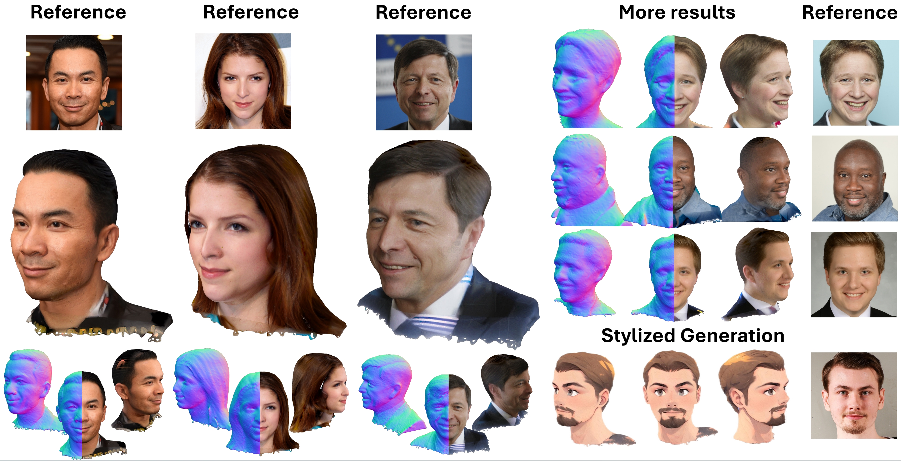

While recent works have achieved great success on one-shot 3D common object generation, high quality and fidelity 3D head generation from a single image remains a great challenge. Previous text-based methods for generating 3D heads were limited by text descriptions and image-based methods struggled to produce high-quality head geometry. To handle this challenging problem, we propose a novel framework, Portrait3D, to generate high-quality 3D heads while preserving their identities. Our work incorporates the identity information of the portrait image into three parts: 1) geometry initialization, 2) geometry sculpting, and 3) texture generation stages. Given a reference portrait image, we first align the identity features with text features to realize ID-aware guidance enhancement, which contains the control signals representing the face information. We then use the canny map, ID features of portrait image, and a pre-trained text-to-normal/depth diffusion model to generate ID-aware geometry supervision, and 3D-GAN inversion is employed to generate ID-aware geometry initialization. Furthermore, with the ability to inject identity information into 3D head generation, we use ID-aware guidance to calculate ID-aware Score Distillation (ISD) for geometry sculpting. For texture generation, we adopt the ID Consistent Texture Inpainting and Refinement which progressively expands the view for texture inpainting to obtain an initialization UV texture map. We then use the id-aware guidance to provide image-level supervision for noisy multi-view images to obtain a refined texture map. Extensive experiments demonstrate that we can generate high-quality 3D heads with accurate geometry and texture from single in-the-wild portrait image.
Given a single in-the-wild portrait image, Portrait3D uses Identity-aware Head Guidance and Initialization to integrate identity information into the Geometry Sculpting stage. In the texture generation stage, ID Consistent Texture Inpainting and Refinement is applied to generate a high-quality head texture, where we first use the inpainting method to generate a rough texture and then use image-level ID-aware supervision for texture refinement. With these methods, we can generate high-quality 3D head models with consistent identities from a single in-the-wild face image.
@misc{hao2024portrait3d,
title={Portrait3D: 3D Head Generation from Single In-the-wild Portrait Image},
author={Jinkun Hao and Junshu Tang and Jiangning Zhang and Ran Yi and Yijia Hong and Moran Li and Weijian Cao and Yating Wang and Lizhuang Ma},
year={2024},
eprint={2406.16710},
archivePrefix={arXiv},
}